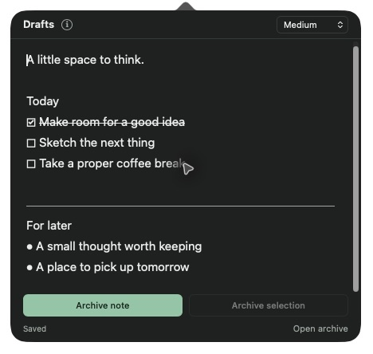

A note within reach.
Click Drafts in your Chrome toolbar or Mac menu bar and start writing. Your edits save automatically. Click away when you’re done.
A small space in Chrome or on your Mac
Quick thoughts, everyday lists, and things to come back to. One click away in your Chrome toolbar or Mac menu bar.

Less setup. More space.
Click Drafts in your Chrome toolbar or Mac menu bar and start writing. Your edits save automatically. Click away when you’re done.
Add bullets, checkboxes, and dividers as you type. Check off a task to strike it through, and keep going on the next line.
Move a whole note or a selected passage into your editable archive. Your note and archive stay on your device.
Small shortcuts
At the start of a line, type a shortcut followed by a space. The i beside Drafts keeps a guide handy.
Now in the Chrome Web Store
Install Drafts in Chrome 102 or later. Your note and archive save locally in this Chrome profile.
Open Drafts in the Chrome Web Store, choose Add to Chrome, and confirm.
Open Chrome’s extensions menu and pin Drafts to your toolbar.
Click the Drafts icon to open your note. Chrome handles future extension updates.
The Mac edition
This download is for Apple silicon Macs (M1 and later).
Open the Drafts DMG from your Downloads folder.
Drag Drafts onto the Applications shortcut, then eject the disk image.
Open Drafts from Applications. Click its pencil icon in the menu bar to write.
Drafts saves locally, needs no account, and works offline. The editor makes no network requests; the Chrome extension asks only for storage permission. Chrome and Mac keep separate notes and archives, with no sync between editions or Chrome profiles. Copy important text before uninstalling the extension.